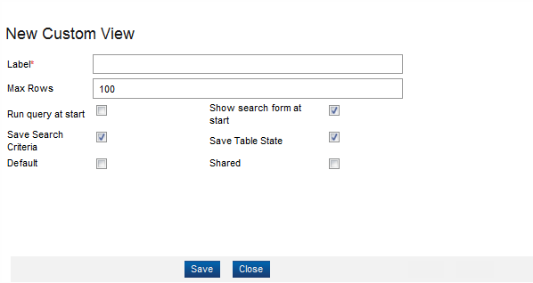
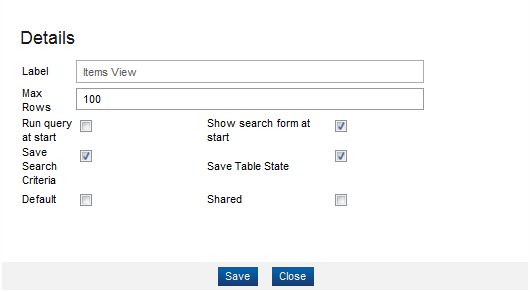

Item - View
You can customize the page with View option. The custom view allows you to change the search, select, and save settings. The following options are available:
Add a New View
To add a new view, follow these steps:
- From the Overview page, click Commercial Modeling > Items in the Quick start section.
- The Item page appears; click the View button and then select Add Custom View option.
- The New Custom View dialog appears.

- Enter or select the information for the following fields:
| Field |
Description |
| Label |
This field indicates the name of the view. You cannot change the value of this field once you have entered and saved your changes. |
| Max Rows |
This field denotes the number of rows to retrieve. The maximum and default value for this field is 100. |
| Run query at start |
Select this field to search the database for existing favorites. |
| Show search form at start |
By default, this field is selected, which opens the selected custom view and displays the report on screen. |
| Save Search Criteria |
By default, this field is selected, meaning that the finder's search criteria are saved for custom views and favorites. Otherwise, when this field is not selected, the search criteria are cleared when you leave your finder results. |
| Save Table State |
By default, this field is selected, indicating that you want to save the table layout for your custom view. This field is always visible. |
| Default |
Select this field to indicate that this custom view is the default view for this finder. |
| Shared |
Select this field to indicate that this custom view can be shared. |
- Click the Save button. A message appears at the top of the dialog, indicating that your custom view has been successfully saved.
- Click the Close button to close the dialog. The label of the custom view appears at the top in the results area.
Modify a View
To modify an existing custom view, follow these steps:
- From the Items page, click View and then select Modify Custom View option.

- The Details dialog appears; change your prefrences for the custom view and then click the Save button.
- A message appears that the custom view has been successfully saved.
- Click the Close button.
Delete a Custom View
To delete a custom view, follow these steps:
- From the Items page, click View and then select Delete View option.
- Select the custom view that you want to delete from the list.
- A confirmation message appears, click the Yes button to confirm.
- To verify that your custom view has been deleted, click the View button. Your custom view name no longer appears in the list.
|